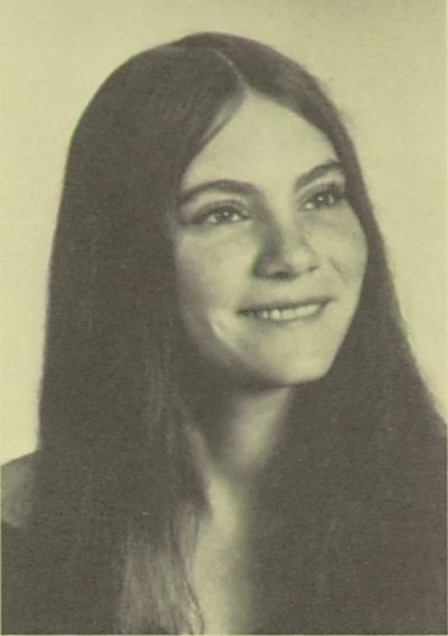
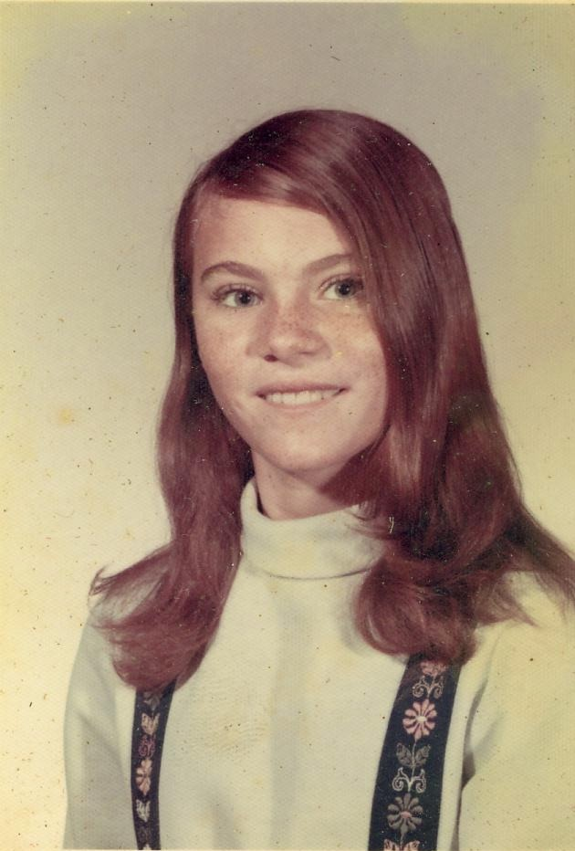
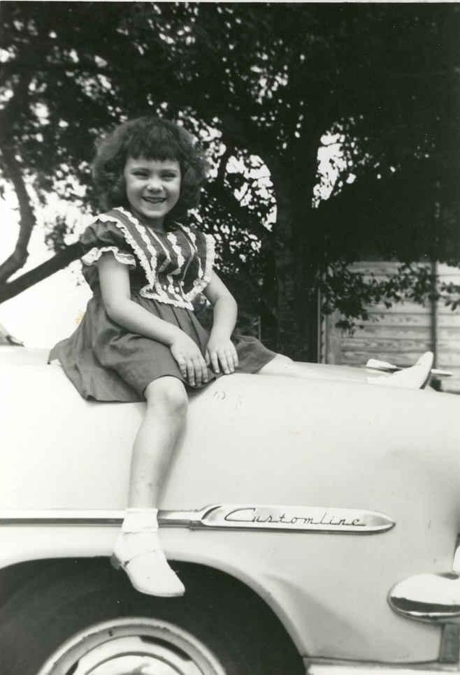
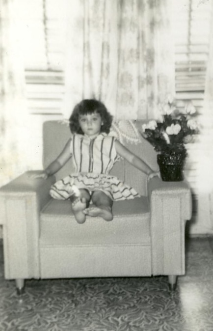
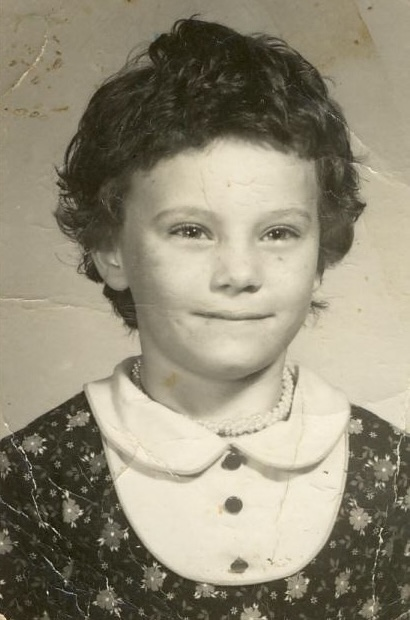
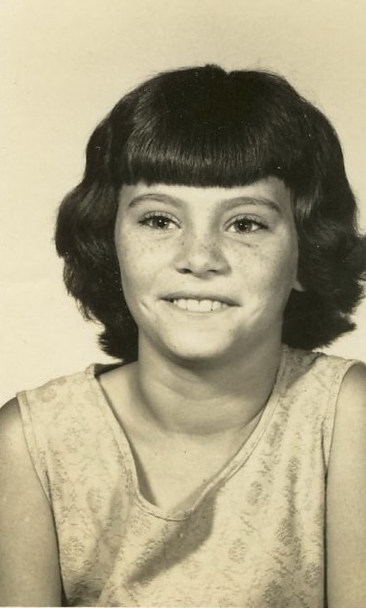

Debra Renee George
1956–2012

Life Events
Born: March 11, 1956 — Clearwater, Pinellas County, Florida, United States
Died: June 27, 2012 — Dowling Park, Suwannee County, Florida, United States
Family
Mother: Evelyn Herrin
Siblings
Military Service
No military service information has been added.
Biography
Debra Renee George was born on March 11, 1956, in Clearwater, Pinellas County, Florida. She was a daughter of Evelyn Herrin (1934–2011).
Debra was identified as Freddy Mathis's stepdaughter in his obituary published in The Florida Times-Union on December 21, 1967.
On January 31, 1981, Debra married Billy Franklin Odom in Taylor County, Florida. Their marriage is documented in Florida Department of Health records under certificate number 014688.
Debra was also known as Debra Renee Cotrel. The circumstances and date of her adoption of the Cotrel surname have not yet been established.
Debra died on June 27, 2012, in Dowling Park, Suwannee County, Florida, at the age of 56. She was buried at Woodlawn Cemetery in Perry, Taylor County, Florida.
Photos





Sources
No sources have been added yet.